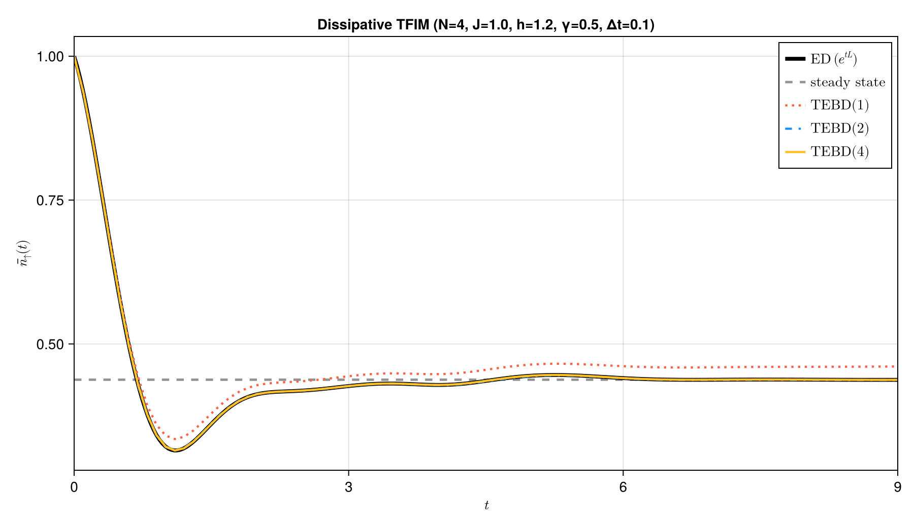
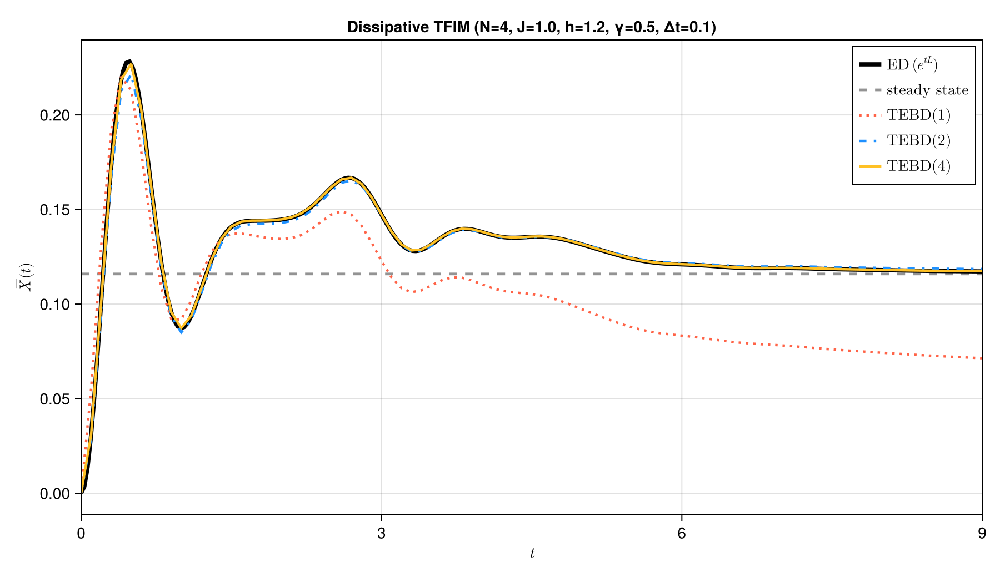

Dissipative spin-chain dynamics
A closed transverse-field Ising model describes coherent spin rotation and correlated many-body motion. Real spin platforms also exchange energy with their surroundings, so coherent dynamics is progressively damped and the system relaxes toward a state selected by both the Hamiltonian and the environment. How does local amplitude damping change the Up population and the transverse magnetization of a transverse-field Ising chain? The observables are the mean Up density $\bar n_\uparrow(t)$ and the mean Pauli magnetization $\overline X(t)$.
The figures below, with first-, second-, and fourth-order TEBD against dense $e^{t\mathcal L}$ evolution, are generated by scripts/tebd_tfim_dissipative.jl. This page runs one second-order trajectory on a shorter window.
Model
Time is in units of $1/J$, with $\hbar=1$. The spin chain is
\[H = -J\sum_{j=1}^{N-1} Z_jZ_{j+1} -h\sum_{j=1}^{N} X_j ,\]
with a local loss channel on every site. On an S=1/2 site, the Hamiltonian operators $X$ and $Z$ are Pauli operators. The jump operator $S^-$ is the spin lowering operator, with $S^-|\mathrm{Up}\rangle=|\mathrm{Dn}\rangle$. The master equation is
\[\frac{d\rho}{dt} = -i[H,\rho] + \gamma\sum_{j=1}^{N}\mathcal{D}[S_j^-]\rho , \qquad \mathcal{D}[L]\rho = L\rho L^\dagger -\frac{1}{2}\{L^\dagger L,\rho\}.\]
The initial state is $|\mathrm{Up}\cdots\mathrm{Up}\rangle$. Its local Up population is the projector $(I+Z)/2$. That product state is an eigenstate of every local $Z$, and it is an eigenstate of the interacting $H$ only in special limits. The two plotted densities are
\[\bar n_\uparrow(t) = \frac{1}{N}\sum_{j=1}^{N} \left\langle\frac{I+Z_j}{2}\right\rangle_t , \qquad \overline X(t) = \frac{1}{N}\sum_{j=1}^{N}\langle X_j\rangle_t .\]
$\sum_j X_j$ commutes with $\overline X$, so the transverse field by itself does not rotate $\overline X$. A nonzero value in this model comes from the Ising coupling, the field, and the loss acting together.
Parameters and operators
using ITensors
using ITensors.Ops: Trotter
using ProcessTensors
const N = 6
const J = 1.0
const transverse_field = 1.2
const decay_rate = 0.5
const dt = 0.1
const final_time = 4.0
const maxdim = 96
const cutoff = 1e-10
physical_sites = siteinds("S=1/2", N)
liouville_sites = liouv_sites(physical_sites)
hamiltonian = let H = OpSum()
for j in 1:(N - 1)
H += -J, "Z", j, "Z", j + 1
end
for j in 1:N
H += -transverse_field, "X", j
end
H
endsum(
-1.0 Z(1,) Z(2,)
-1.0 Z(2,) Z(3,)
-1.0 Z(3,) Z(4,)
-1.0 Z(4,) Z(5,)
-1.0 Z(5,) Z(6,)
-1.2 X(1,)
-1.2 X(2,)
-1.2 X(3,)
-1.2 X(4,)
-1.2 X(5,)
-1.2 X(6,)
)A tuple (γ, "S-", j) contributes $\gamma\mathcal D[S_j^-]$ to the Liouvillian. The first entry is the dissipative rate, the second entry is the jump operator responsible for the dissipation, and the third is the site index where this operator sits.
jump_operators = [(decay_rate, "S-", j) for j in 1:N]
initial_state = MPS(physical_sites, fill("Up", N))
initial_density = to_dm(initial_state)
initial_density_liouville =
to_liouville(initial_density; sites=liouville_sites)
mean_x_operator = let observable = OpSum()
for j in 1:N
observable += 1 / N, "X", j
end
observable
endsum(
0.16666666666666666 X(1,)
0.16666666666666666 X(2,)
0.16666666666666666 X(3,)
0.16666666666666666 X(4,)
0.16666666666666666 X(5,)
0.16666666666666666 X(6,)
)Now we define the observables we wish to track in the Liouville space. Local projector onto Up is $(I + Z)/2$, and the local transverse magnetization is $X/N$.
excited_density_operator = let observable = OpSum()
for j in 1:N
observable += 0.5 / N, "Id", j
observable += 0.5 / N, "Z", j
end
observable
end
mean_x_liouville = to_liouville(
MPO(mean_x_operator, physical_sites);
sites=liouville_sites,
)
excited_density_liouville = to_liouville(
MPO(excited_density_operator, physical_sites);
sites=liouville_sites,
)
@assert isapprox(real(tr(initial_density)), 1.0; atol=1e-12)Liouville-space TEBD
Vectorization turns the master equation into
\[\frac{d}{dt}|\rho(t)\rangle\rangle = \mathcal L|\rho(t)\rangle\rangle .\]
tebd builds the local Liouville gates from hamiltonian and jump_operators. The evolution interval passed to it is the real step dt, because $\mathcal L$ already contains the factor $-i$. This page uses one second-order splitting, Trotter{2}().
nsteps = round(Int, final_time / dt)
@assert isapprox(nsteps * dt, final_time; atol=100eps(Float64))
times = collect(range(0.0; step=dt, length=nsteps + 1))
trajectory = let
density = copy(initial_density_liouville)
mean_x = Float64[]
excited_density = Float64[]
trace_errors = Float64[]
bond_dimensions = Int[]
for step in eachindex(times)
trace_value = tr(to_hilbert(density))
push!(mean_x, real(inner(mean_x_liouville, density) / trace_value))
push!(
excited_density,
real(inner(excited_density_liouville, density) / trace_value),
)
push!(trace_errors, abs(trace_value - 1))
push!(bond_dimensions, maxlinkdim(density))
step == length(times) && continue
density = tebd(
density,
hamiltonian,
dt,
dt;
jump_ops=jump_operators,
alg=Trotter{2}(),
maxdim=maxdim,
cutoff=cutoff,
progress=false,
)
end
(
mean_x=mean_x,
excited_density=excited_density,
trace_errors=trace_errors,
bond_dimensions=bond_dimensions,
)
end
println((
N=N,
final_time=final_time,
final_mean_X=trajectory.mean_x[end],
final_n_up=trajectory.excited_density[end],
max_trace_error=maximum(trajectory.trace_errors),
max_bond_dimension=maximum(trajectory.bond_dimensions),
))
@assert all(isfinite, trajectory.mean_x)
@assert all(isfinite, trajectory.excited_density)
@assert all(value -> -1 - 1e-8 ≤ value ≤ 1 + 1e-8, trajectory.mean_x)
@assert all(value -> -1e-8 ≤ value ≤ 1 + 1e-8, trajectory.excited_density)
@assert maximum(trajectory.trace_errors) < 1e-2(N = 6, final_time = 4.0, final_mean_X = 0.15744056988013067, final_n_up = 0.42325654796084666, max_trace_error = 0.001108536427893015, max_bond_dimension = 64)
What the populations show
The cells above use $N=6$, end at $t=4$, and apply only Trotter{2}(), with maxdim=96 and cutoff=1e-10. The figures are the companion run: $N=4$, the same $J$, $h$, $\gamma$, and $\Delta t=0.1$, through $t=9$, with orders 1, 2, and 4 against dense $e^{t\mathcal L}$, maxdim=128, and cutoff=1e-12.

The Up density starts at 1, falls below the dashed late-time level, and recovers toward it. At this $\Delta t$, first-order TEBD stays visibly above the dense curve. Orders 2 and 4 track that curve through $t=9$. Agreement on this $N=4$ window is the comparison the figure supports.

$\overline X$ starts at zero, becomes nonzero, and oscillates while the loss damps it toward the dashed level. The same first-order curve falls away from the dense result, while orders 2 and 4 stay with it. The dashed line is the steady response of this master equation.
A trace that stays near 1 does not establish accuracy. The first-order population is the visible counterexample: its trace can remain acceptable while $\bar n_\uparrow$ and $\overline X$ are still offset. Bond truncation and the finite window are separate limits. This $t=9$ curve has settled near the dashed line; a shorter window would not show that.
These edits test which parts of $\bar n_\uparrow$ and $\overline X$ come from the field, the Ising coupling, and the timestep. Rebuild the Hamiltonian or the jump list and rerun tebd from the initial all-Up state.
- Set
transverse_field = 0. The Up density should follow $\bar n_\uparrow(t)=e^{-\gamma t}$. The Ising coupling leaves that law unchanged. - Set
J = 0and keep the field and the loss. $\overline X$ stays zero for a product of independent spins that start inUp. - Use the companion length $N=4$, halve
dt, and keep the same final time. Compare the late population and $\overline X$ with that script's dense reference at the same $J$, $h$, and $\gamma$.